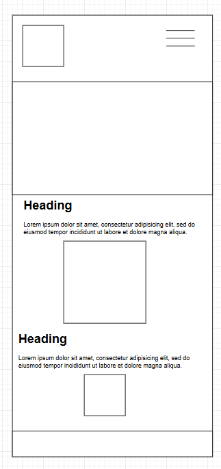
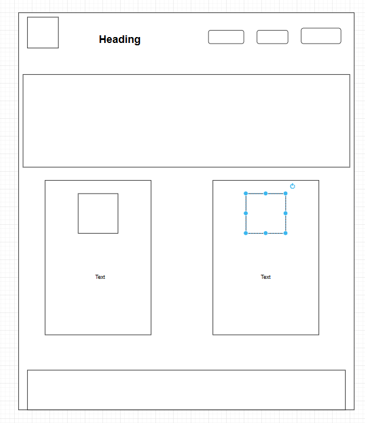

The name of the website will be: JogLog. I chose this name becasue it is fun and inviting. It will hold various information (logs) for runners.
The purpose of this site will to provide information for those that are looking for tips on running. Gear, recovery, etc.
Do you know what kind of gear you need?
What kind of recovery should you do post run?
This is my color palette: here
Primary color is this green
Secondary color is this lighter green
Primary color will be used for the navigation component
Secondary color will be used for accents on the site
I chose the Quicksand font for this project, which will be used in headings and paragraphs.
Mobile View Wireframe

Desktop View Wireframe
